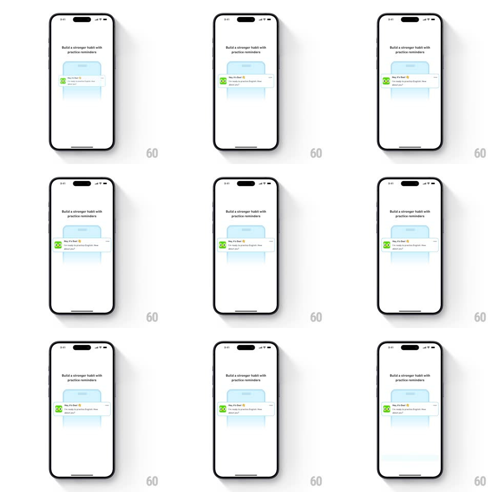

Media
Frame-by-frame

Rebuild this interaction 1:1: Duolingo's practice-reminders nudge - under "Build a stronger habit with practice reminders", a mock iOS notification card ("Hey, it's Duo! I'm ready to practice English. How about you?" with Duo's icon) springs up and fades in over a soft blue blob, demoing what the reminder will look like.

Rebuild this interaction 1:1: Duolingo's practice-reminders nudge - under "Build a stronger habit with practice reminders", a mock iOS notification card ("Hey, it's Duo! I'm ready to practice English. How about you?" with Duo's icon) springs up and fades in over a soft blue blob, demoing what the reminder will look like.
## Integration
Integration: stack-agnostic spec - springs given as stiffness/damping, timed motions as duration + curve; map every value to your framework and animation library of choice.
## Scene
White screen: two-line headline, a soft blue rounded blob in the middle acting as a stage, and the mock notification banner (Duo icon, "Hey, it's Duo!" bold title, preview text) that materializes over it.
## Motion spec
Pattern: mock-notification spring reveal.
- The blue blob fades in first (300ms) at low opacity.
- The notification card springs up from behind/inside the blob (scale 0.7 -> 1.05 -> 1, spring ~300/16, 450ms) while fading in.
- The card settles and gives a small repeat nudge every ~4s (translateY -4px and back, 300ms) as if re-arriving.
- The headline stays static throughout.
## Calibration
- The notification is a faithful iOS banner - rounded rect, app icon left, title bold, body gray.
- The blob is a backdrop, not a container - the card overflows it.
## Reduced motion
Card fades in at final size (250ms); no repeat nudge.
## Don't miss
- The card's text is Duo's voice in first person - the nudge is the product, not a generic bell icon.
- The repeat nudge is small - a reminder of the reminder.